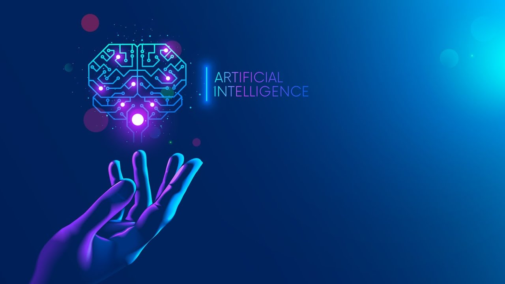
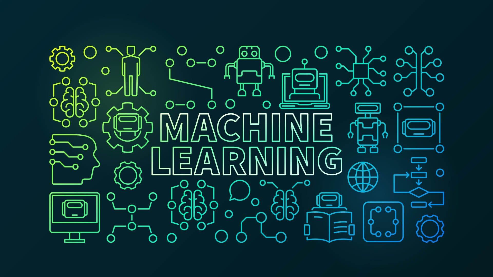

ИСКУССТВЕННЫЙ ИНТЕЛЛЕКТ И МАШИННОЕ ОБУЧЕНИЕ(AI/ML)
Введение
Искусственный интеллект (ИИ) и машинное обучение (МО) стали важными компонентами современного технологического прогресса, затрагивая все аспекты жизни общества. Эти технологии не только трансформируют привычные практики в бизнесе, медицине и образовании, но и поднимают важные этические, социальные и экономические вопросы, требующие тщательного анализа и обсуждения.
Определение и Основы Искусственного Интеллекта
Искусственный интеллект — это область информатики, которая позволяет машинам выполнять задачи, требующие человеческого интеллекта, включая решение проблем и принятие решений на основе данных (Искусственный Интеллект: Что Это Такое, Как Он Работает и ... - ISO, 2024). ИИ охватывает различные технологии, такие как обработка естественного языка, компьютерное зрение и нейронные сети, которые позволяют машинам учиться и адаптироваться к новым данным. Машинное обучение, в свою очередь, является подмножеством ИИ, которое акцентируется на алгоритмах и статистических моделях, позволяющих системам обучаться на основе данных, не полагаясь на явное программирование (Искусственный Интеллект: Что Это Такое, Как Он Работает и ... - ISO, 2024). В рамках МО модели могут выявлять закономерности в данных, что позволяет делать прогнозы и принимать решения относительно новых данных.
Применение Искусственного Интеллекта и Машинного Обучения
- Здравоохранение: ИИ используется для анализа медицинских изображений.
- Бизнес: ИИ помогает оптимизировать процессы, автоматизируя рутинные задачи.
- Финансовые услуги: ИИ и МО автоматизируют процессы анализа данных.
Применение ИИ и МО охватывает широкий спектр сферы, начиная от здравоохранения и заканчивая финансовыми услугами. В медицине ИИ используется для анализа медицинских изображений и улучшения диагностики заболеваний. Например, системы могут обрабатывать рентгеновские снимки с высокой точностью, что позволяет быстрее и более точно определять наличие патологий (Что Такое Искусственный Интеллект? ИИ в Бизнесе - SAP, n.d.). В бизнесе ИИ помогает оптимизировать процессы, автоматизируя рутинные задачи и повышая эффективность работы. Алгоритмы МО используются для анализа потребительских данных, что позволяет компаниям адаптировать свои предложения под запросы клиентов и снижать затраты (Что Такое ИИ? – Подробнее Об Искусственном Интеллекте - AWS, 2023).
Применение машинного обучения в медицине
Машинное обучение находит все более широкое применение в медицине, революционизируя диагностику, лечение и управление пациентами. Один из ключевых аспектов использования МО в медицине — это анализ медицинских данных. Алгоритмы машинного обучения могут обрабатывать огромные объемы данных, извлекая из них полезную информацию для диагностики заболеваний. Например, в области радиологии используются алгоритмы глубокого обучения для анализа медицинских изображений, что позволяет обнаруживать заболевания на ранних стадиях. Исследования показывают, что такие системы могут достигать точности, сопоставимой с человеческими экспертами. Кроме того, МО используется для персонализации лечения, где на основе анализа генетических данных врач может выбрать наиболее эффективный метод терапии. Однако применение МО в медицине также вызывает определенные этические вопросы, связанные с конфиденциальностью данных и возможными предвзятостями алгоритмов. Поэтому необходимо уделять внимание разработке этических норм и стандартов, обеспечивающих безопасное использование технологий.
Искусственный интеллект в бизнесе
В бизнесе ИИ и ММ находят применение в различных сферах, от управления цепочками поставок до маркетинга и обслуживания клиентов. Одним из наиболее ярких примеров является использование алгоритмов для анализа больших данных. Компании могут выявлять тренды, предсказывать спрос и оптимизировать свои процессы, что позволяет им оставаться конкурентоспособными на рынке. Кроме того, ИИ активно используется в области автоматизации обслуживания клиентов. Чат-боты и системы обработки естественного языка позволяют компаниям быстро реагировать на запросы клиентов и предоставлять информацию 24/7. Это не только улучшает пользовательский опыт, но и снижает затраты на обслуживание. Важно отметить, что внедрение ИИ в бизнес также ставит перед компаниями вопросы этики и конфиденциальности данных, которые требуют внимательного подхода.
Искусственный интеллект в финансах
В области финансов искусственный интеллект и машинное обучение находят широкое применение. Одним из ключевых направлений является автоматизация процессов анализа данных и принятия решений. Алгоритмы машинного обучения позволяют анализировать большие объемы финансовой информации, выявлять закономерности и тренды, что помогает компаниям и инвесторам принимать более обоснованные решения. Например, алгоритмы используются для кредитного скоринга, что позволяет банкам оценивать кредитоспособность заемщиков на основе множества факторов, включая кредитную историю, доходы и поведение на рынке. Кроме того, ИИ активно применяют в торговле на фондовых рынках, где алгоритмы могут мгновенно реагировать на изменения цен и проводить сделки, минимизируя риски и максимизируя прибыль. Тем не менее, использование ИИ в финансах также несет риски, связанные с прозрачностью и этикой. Автоматизированные системы могут проявлять предвзятость на основе исторических данных, что может привести к несправедливым решениям и дискриминации некоторых групп клиентов.
Искусственный интеллект и будущее труда
С внедрением ИИ и машинного обучения в различные сферы возникает вопрос о будущем труда. С одной стороны, ИИ способен выполнять рутинные и опасные задачи, что позволяет улучшить условия труда и повысить производительность. С другой стороны, существует опасение, что автоматизация приведет к сокращению рабочих мест. Прогнозы о влиянии ИИ на рынок труда варьируются: некоторые эксперты утверждают, что многие профессии исчезнут, в то время как другие считают, что новые технологии создадут новые рабочие места, требующие высококвалифицированной рабочей силы. Важно отметить, что ИИ не заменит полностью человека, а будет выступать в качестве инструмента, который поможет людям выполнять свою работу более эффективно. Таким образом, для успешной интеграции ИИ в рабочие процессы необходимо развивать навыки и знания сотрудников, что обеспечит адаптацию к изменениям на рынке труда и поможет преодолеть возможные негативные последствия автоматизации.
Этические и Социальные Вопросы
С внедрением ИИ и МО возникают и множество этических проблем. Исследования показывают, что системы ИИ могут иметь предвзятости, перенимаемые от данных, на которых они обучены. Например, алгоритмы, используемые в здравоохранении, могут не учитывать социальные и экономические различия, что приводит к дискриминации определенных групп населения. Также, внедрение ИИ может угрожать рабочим местам. По прогнозам, автоматизация многих профессиональных задач может привести к значительным потерям рабочих мест в различных сферах. Это создает необходимость в переобучении работников и подготовке их к новым условиям труда.
Будущее Искусственного Интеллекта
Прогнозируется, что ИИ и МО продолжат развиваться, играя ключевую роль в формировании новых технологий и подходов к решению встречающихся проблем. Ожидаемое увеличение мощностей вычислительных систем, использование облачных платформ и развитие новых алгоритмов обеспечат дальнейший рост и совершенствование этих технологий в различных сферах. С каждым новым достижением в области ИИ появляется необходимость в разработке четких этических норм и стандартов, направленных на обеспечение безопасного и справедливого использования этих технологий.
Заключение
Искусственный интеллект и машинное обучение представляют собой мощные инструменты, которые могут значительно улучшить качество жизни и эффективностью процессов во многих сферах. Однако вместе с их развитием важным аспектом остаются вопросы этики, справедливости и возможных социальных последствий. Будущее технологий будет зависеть не только от их технического развития, но и от того, как общество решит интегрировать их в свою жизнь, учитывая все преимущества и риски. В ключевых моментах можно сопоставить достижения ИИ с осознанием ответственности за использование этих мощных инструментов, что позволит направить их развитие на благо всего общества.
СОЦИАЛЬНЫЕ СЕТИ
Введение
Социальные сети стали неотъемлемой частью повседневной жизни миллионов людей по всему миру. Изначально задуманные как платформы для общения и обмена информацией, социальные сети сегодня играют значительную роль в образовании, бизнесе, политике и личных взаимоотношениях. Однако, помимо положительных аспектов, они также приносят с собой множество вызовов, включая вопросы конфиденциальности и потенциальных зависимостей.
История и развитие социальных сетей
Понятие "социальная сеть" впервые было введено в 1954 году и имело мало общего с современными платформами. Тем не менее, быстрый рост Интернета в 1990-х годах привел к созданию таких сайтов, как SixDegrees и Friendster, которые положили начало современным социальным сетям. В дальнейшем, с появлением Facebook, Twitter и Instagram, социальные сети стали более популярными и функциональными, превратившись в важные инструменты общения и развлечений. Одной из ключевых особенностей современных социальных сетей является возможность пользователей не только обмениваться информацией, но и создавать контент, что привело к возникновению явления, известного как пользовательский контент (UGC). Это дало толчок развитию блоггинга, влоггинга и различных форм самовыражения через различные медиаформаты.
Применение социальных сетей
Социальные сети используются для различных целей, включая общение, образование, бизнес и маркетинг. Они предоставляют пользователям платформу для связи с друзьями и семьей по всему миру, что особенно полезно для людей, находящихся далеко друг от друга (Социальные Сети: Плюсы и Минусы - Блог Студии WEBAKULA, 2017). Кроме того, социальные сети становятся эффективным инструментом для бизнеса, позволяя компаниям продвигать свои товары и услуги, взаимодействовать с клиентами и собирать отзывы (Нагаева А.Э., n.d.). Социальные сети также помогают в образовательных целях, предоставляя доступ к большим объемам информации и ресурсам. В разных группах по интересам пользователи могут обмениваться знаниями, участвовать в обсуждениях и находить ответ на свои вопросы.
Преимущества социальных сетей
Преимущества социальных сетей обширны. Прежде всего, они обеспечивают возможность быстрой и свободной коммуникации (Нагаева А.Э., n.d.). Пользователи могут легко поддерживать контакт с друзьями и родственниками, делиться новостями, фотографиями и видео. Социальные сети также способствуют социальному взаимодействию и саморазвитию, предоставляя платформу для самовыражения и взаимопомощи. Они могут стать местом для поиска единомышленников и формирования сообществ на базе общих интересов. Кроме того, социальные сети являются важным инструментом для продвижения бизнеса. Возможности таргетированной рекламы позволяют рекламодателям достигать своей специфической аудитории, что повышает эффективность рекламных кампаний.
Недостатки и риски использования социальных сетей
Несмотря на множество преимуществ, социальные сети также имеют значительные недостатки. Одним из самых серьезных негативных аспектов является угроза конфиденциальности. Пользователи часто не осознают, что информация, которую они публикуют, может быть использована недоброжелателями или привести к потере личных данных. Еще одной проблемой является кибербуллинг — использование цифровых технологий для запугивания и травли, что особенно актуально для подростков (Кибербуллинг. Что Делать, Если Стал Его Жертвой, и Как ..., 2023). На фоне повышения зависимости от социальных сетей, возникают опасения о негативном влиянии на психическое здоровье, включая состояние тревожности и депрессии, вызванное чрезмерным использованием (Макхост, 2022). Кроме того, социальные сети могут провоцировать распространение дезинформации и использование ложных новостей, что создает общественные и политические риски.
Заключение
Социальные сети стали неотъемлемой частью современного общества, предоставляя множество возможностей для общения и самовыражения. Однако важно учитывать как их положительное влияние, так и потенциальные риски. Умелое использование социальных сетей, осознание их недостатков и сознательное поведение может помочь минимизировать негативные последствия, извлекая при этом максимум пользы. В конечном счете, социальные сети — это мощный инструмент, который, при разумном использовании, может существенно обогатить жизнь пользователей, но требует внимания к этическим и социальным аспектам их использования.